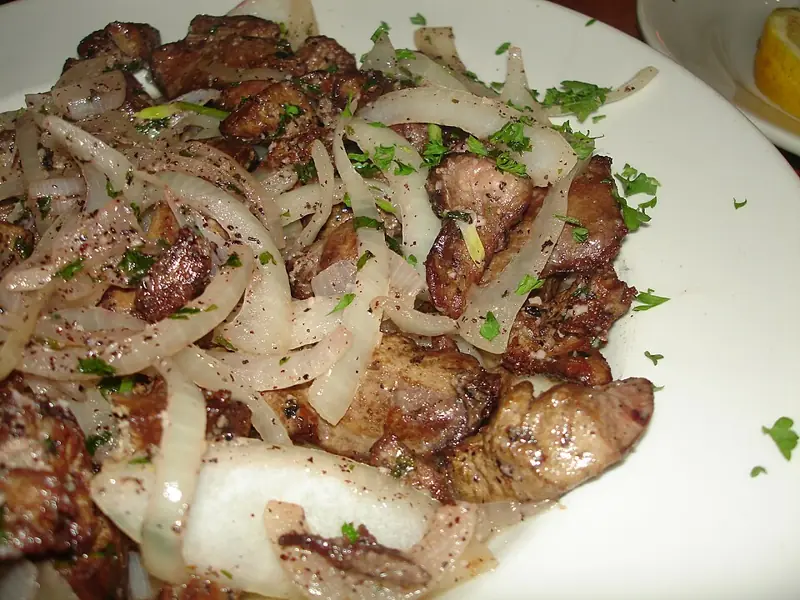

Фото: Joe Foodie, CC BY 2.0

Куриная печень со сметаной
Нежная печень с луком в сметанном соусе за полчаса
30 мин3 порц.502 ккал на порциюБ 35 · Ж 34 · У 14Русская кухня
Продукты на 3 порц.
- Куриная печень500 г
- Лук репчатый2 шт
- Сметана 20%8 ст. л.
- Мука пшеничная1 ст. л.
- Вода0,5 стак.
- Растительное масло2 ст. л.
- Соль1 ч. л.
- Перец чёрный молотый2 щеп.
- Укроп по желанию0,5 пучок
Как готовить
- Печень промойте, срежьте плёнки и жилки, обсушите. Крупные кусочки разрежьте пополам.
- Лук нарежьте полукольцами и обжарьте на половине масла на среднем огне 5-7 минут до золотистого цвета. Переложите в тарелку.
- Обваляйте печень в муке. На оставшемся масле обжаривайте на сильном огне по 2 минуты с каждой стороны.
- Верните лук, добавьте сметану и воду, перемешайте.
- Убавьте огонь до слабого и тушите под крышкой 5-7 минут. Посолите и поперчите в самом конце.
- Разрежьте кусочек: внутри печень светло-коричневая, без крови. Посыпьте укропом.
Совет. Солите печень только в конце: соль в начале вытягивает сок, и печень становится жёсткой. Дольше 10 минут в соусе не тушите.